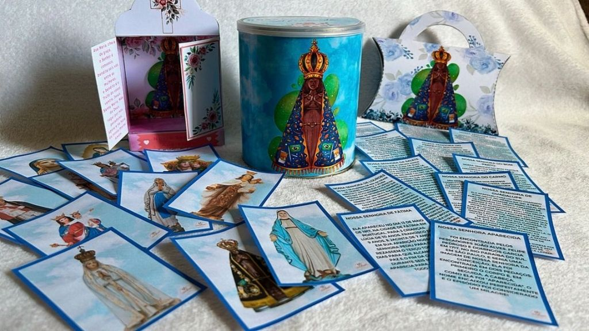
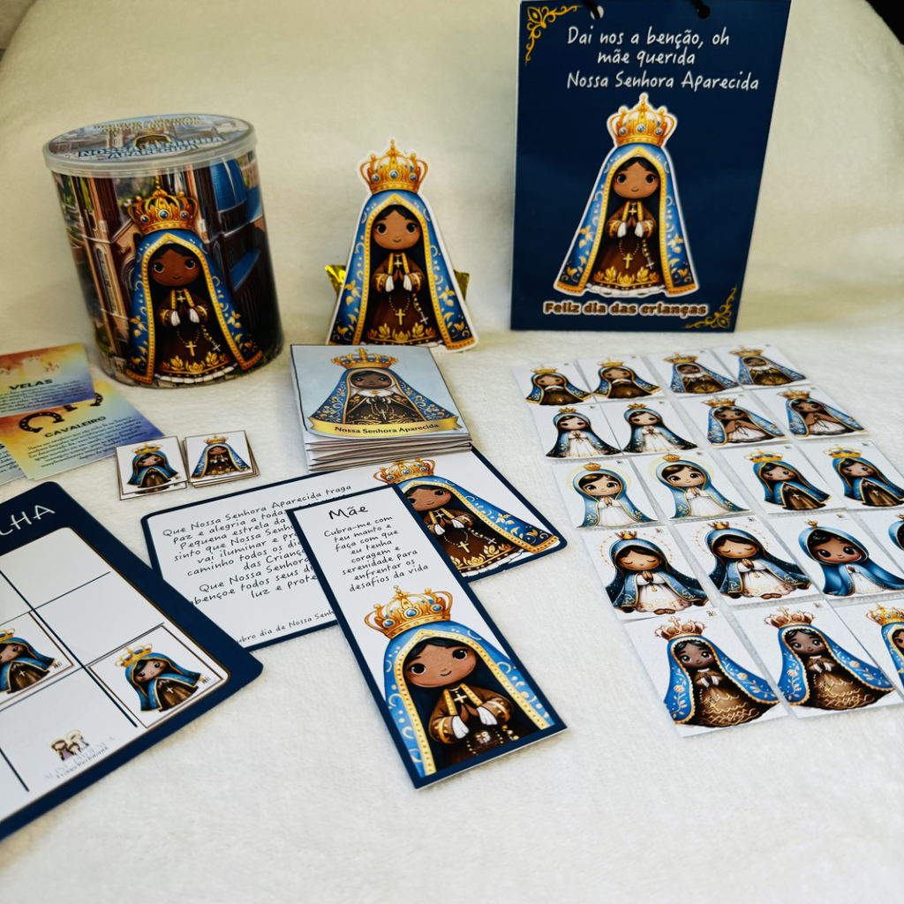

Seu filho. Sua neta. Seu afilhado. Sua turma de catequese. Alguém, um dia, sentou e apresentou Nossa Senhora pra você. Agora é a sua vez.
Quero o material — R$ 15Pagamento único • Pix ou cartão • Chega no seu e-mail
E você — mãe, pai, avó, madrinha, catequista — começa a contar. Do rio, dos pescadores, da imagem partida ao meio que apareceu na rede. Mas no meio da história percebe que não lembra de tudo. Que nunca teve o assunto organizado do jeito que uma criança entende. E criança, hoje em dia, aprende é com atividade, com joguinho, com desenho pra colorir.
Tem outra cena também, mais quieta. A criança que sabe de cor todas as músicas que tocam no celular — e não sabe fazer o sinal da cruz. Ninguém decidiu que ia ser assim. Foi só ninguém sentando pra ensinar.
Foi pensando nisso que uma catequista criou este material: a história de Nossa Senhora Aparecida inteira, contada para criança entender — com fichas, jogos, atividades de colorir e até roteiro de coroação. Você imprime e vive uma tarde com seu neto, sua filha, sua turma de catequese.


Antes de decidir, assista: é a própria autora, Aline Proença, mostrando página por página o que você vai receber.
Vídeos do canal da autora no YouTube — o que você vê é o que você recebe.
Que querem que o filho e o neto cresçam sabendo quem é a santa da estante — e por que essa devoção sustentou a família por gerações.
Que precisa de aula pronta sobre a padroeira do Brasil: fichas, jogos, coroação e lembrancinha, sem passar a noite montando material.
Que quer trocar uma tarde de tela por uma tarde de história, tesoura, cola e conversa sobre fé — com começo, meio e fim.
Aline Proença
Autora do site Catequese para Crianças
Este material não saiu de uma agência de marketing. Saiu da mesa de uma catequista que cria materiais de catequese no site Catequese para Crianças — e que mostra o trabalho dela de cara limpa: nos vídeos aqui em cima e no Instagram aberto pra qualquer um conferir.
É por isso que o kit tem o que só quem está na sala de catequese sabe que precisa: a lembrancinha de lata, o livrinho sanfonado, o roteiro de coroação — e a história contada na altura dos olhos da criança.
Nossa Senhora Aparecida — Material Completo de Catequese
PDF completo para imprimir, de Aline Proença (Catequese para Crianças)
R$15
Pagamento único • Pix ou cartão • Sem mensalidade
Imprime para a turma inteira e reusa todo ano — sai menos que uma única lembrancinha pronta
🔒 Compra processada pelo Hotmart • Garantia de 7 dias
A compra tem a garantia padrão do Hotmart: se em até 7 dias você achar que o material não é para você, pede o reembolso direto na plataforma e recebe tudo de volta. Sem precisar justificar.
Consegue. O material chega em PDF no seu e-mail, e qualquer papelaria ou gráfica de bairro imprime por poucos reais. Você pode levar o arquivo num pendrive ou enviar pelo WhatsApp da papelaria.
É material de catequese infantil. Funciona com crianças em idade de catequese e também em casa, com netos menores, com a ajuda de um adulto lendo e conduzindo as atividades.
A compra é processada pelo Hotmart, plataforma segura de produtos digitais. Assim que o pagamento confirmar, chega um e-mail com o link para baixar. Aceita Pix e cartão.
Sim. O material foi criado justamente para catequese — inclui fichas, jogos, roteiro de coroação e atividades pensadas para turma.
Sim. É um material devocional católico sobre Nossa Senhora Aparecida, padroeira do Brasil: a história da imagem encontrada no rio, os títulos de Maria, os símbolos e os milagres.
Pode. O checkout do Hotmart aceita Pix e cartão de crédito. O pagamento é único, de R$ 15, sem mensalidade.
Uma mãe, uma avó, uma catequista. Alguém sentou com você e contou a história da imagem que apareceu no rio. Agora é a sua vez de sentar com uma criança — filho, neto, afilhado, turma — e fazer o mesmo.
No dia 12 de outubro, Dia de Nossa Senhora Aparecida e Dia das Crianças, tem criança que vai ganhar brinquedo. E tem criança que vai ganhar uma história que fica pra vida inteira. Dá tempo de preparar — se começar agora.
Quero o material — R$ 15